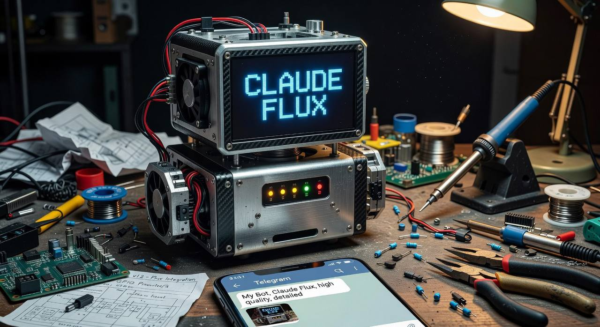
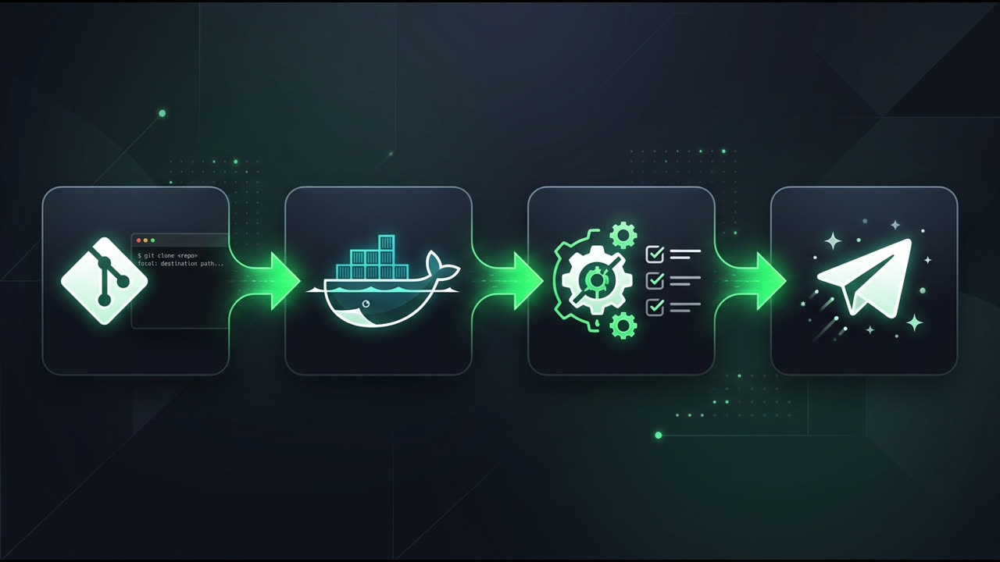

Your AI assistant,
living in Telegram
Claude Flux turns Claude Code CLI into a personal assistant you talk to on Telegram. Runs entirely on your machine — no cloud middlemen, full control over your data.
If Claude Flux helps you, consider giving it a ⭐ on GitHub to support the project!

Up in 3 commands
git clone https://github.com/ntzamos/claude-flux
cd claude-flux && docker compose up -d
# open the setup wizard
open http://localhost
Everything you need, nothing you don't
One Docker stack. Two services. Full personal AI assistant.
Telegram-native
Send messages, photos, voice notes, and documents. Claude replies directly in the chat you already use.
Persistent memory
Remembers facts, tracks your goals, and uses semantic search to surface relevant context on every message.
Scheduled tasks
Just say "remind me tomorrow at 9am" or "send me a weekly summary every Monday". Claude handles the rest.
Voice messages
Voice notes are transcribed locally using whisper.cpp — no API calls, no cost. Model auto-downloads on first run.
Web dashboard
Manage settings, browse chat history, edit memory, and monitor tasks from a clean web UI at localhost.
Fully self-hosted
Your conversations stay on your machine. Nothing goes to third parties except the AI API calls you choose to make.
Human-in-the-loop
Before taking any action on your behalf, Claude shows a confirmation button. You stay in control.
Voice replies
Connect ElevenLabs and Claude will respond with a voice message instead of text. Totally optional.
Image generation
Ask Claude to generate an image and it sends the result straight to your Telegram chat via DALL-E or Gemini.
How it works
From zero to a working bot in under 10 minutes.

Clone and start Docker
Run docker compose up -d. The stack builds automatically — relay bot, web dashboard, and PostgreSQL with pgvector.
Complete the onboarding wizard
Open http://localhost and connect your Telegram bot token and Anthropic API key via the setup wizard. Takes about 5 minutes.
Personalize your profile
Tell the bot about yourself — work, timezone, communication style. It loads your profile on every message so Claude always has context.
Start chatting
Open Telegram and send a message to your bot. That's it — your personal AI assistant is live.
The stack
Simple, proven, easy to extend.
Star history
Help others discover Claude Flux — a ⭐ goes a long way.